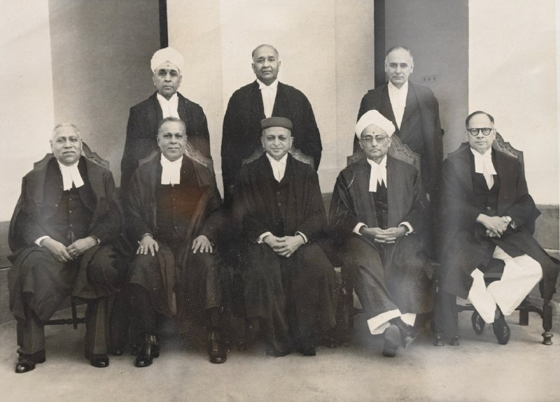
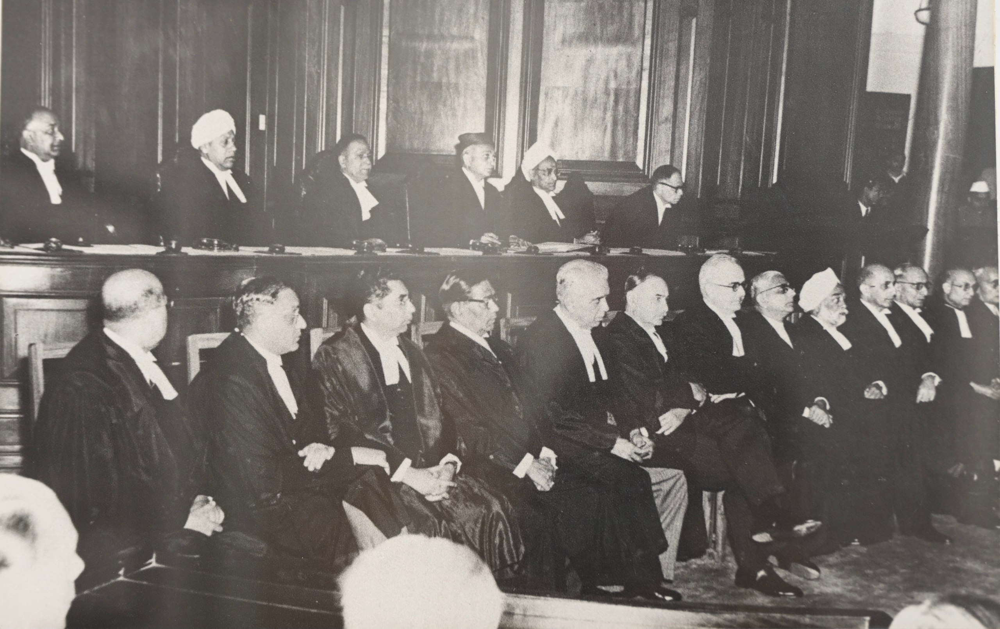
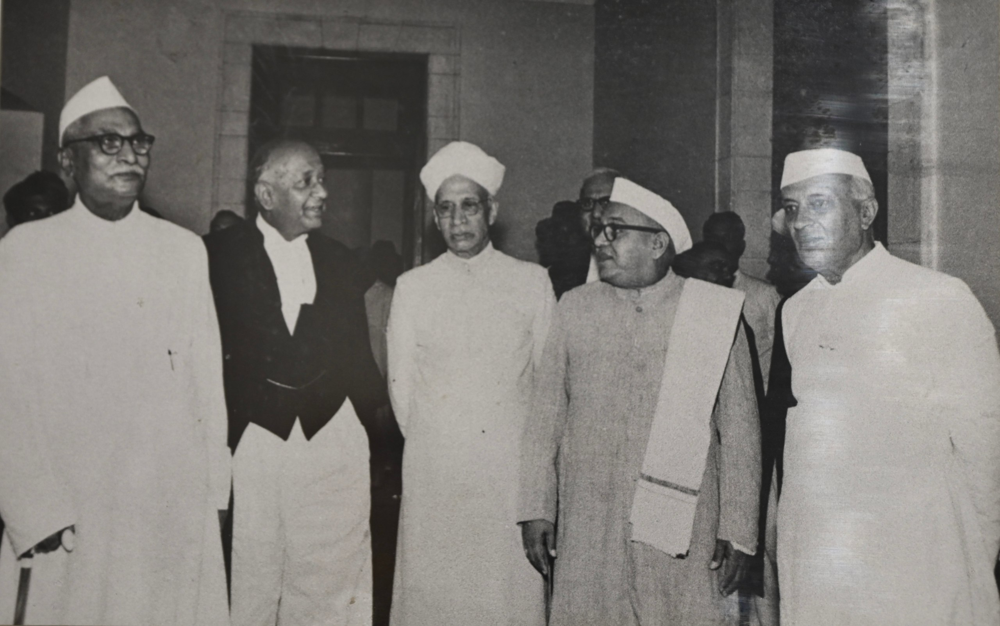

The history of the Supreme Court of India is closely connected with the constitutional, political, and judicial development of India. The Supreme Court is the highest judicial authority in the country and stands at the top of India's unified judicial system. However, the institution did not emerge suddenly in 1950. Its historical roots can be traced to the judicial institutions established during British rule. The development of the Supreme Court passed through several important stages, including the establishment of the Supreme Court at Calcutta, the creation of the High Courts, the establishment of the Federal Court of India, and finally the establishment of the Supreme Court under the Constitution of India.
The Supreme Court came into existence on 28 January 1950, shortly after India became a republic. It replaced the Federal Court of India and also brought to an end the remaining appellate authority of the Judicial Committee of the Privy Council in London. Since its establishment, the Supreme Court has developed into a major constitutional institution. Its history reflects the changing nature of Indian democracy, constitutional government, fundamental rights, federalism, judicial review, and the rule of law.
Before the establishment of British rule, India did not have a single uniform judicial system. Different parts of the country followed different legal traditions. Hindu law, Islamic law, customary practices, local traditions, and the authority of rulers and local institutions all played important roles in the administration of justice.
With the expansion of the British East India Company's political authority, new judicial institutions gradually developed. The East India Company initially established courts mainly for administrative purposes in the territories under its control. These courts were different from the courts established directly under the authority of the British Crown.
After the East India Company obtained the Diwani rights of Bengal, Bihar, and Orissa in 1765, it became increasingly involved in the administration of civil justice and revenue. Various judicial reforms were introduced during the eighteenth century. Warren Hastings introduced important reforms in the organization of civil and criminal courts. These reforms laid some of the foundations for the later development of a formal judicial hierarchy in India.
One of the earliest important developments in the history of India's higher judiciary was the establishment of the Supreme Court at Calcutta. The Regulating Act of 1773 authorized the establishment of the court, and it began functioning in 1774. It was the first Crown court established in India with a structure based largely on the English judicial system.
The Supreme Court at Calcutta consisted of a Chief Justice and other judges appointed by the British Crown. Sir Elijah Impey became its first Chief Justice. The court exercised jurisdiction over the presidency town of Calcutta and over certain British subjects and persons connected with the Company's administration.
The establishment of the Supreme Court was an important development because it introduced a superior Crown court into the Indian judicial structure. However, the court soon became involved in conflicts with the Governor-General and the East India Company's administration. There was uncertainty concerning the exact limits of its jurisdiction, especially outside Calcutta.
The conflicts demonstrated the difficulties of operating two different judicial systems at the same time. The Supreme Court represented the authority of the Crown, while the Company's courts operated under the administrative authority of the East India Company. These difficulties eventually led to further reforms and clarification of judicial powers.
Following the establishment of the Supreme Court at Calcutta, similar courts were established in the other major presidency towns. The Supreme Court at Madras was established in 1801, while the Supreme Court at Bombay was established in 1824.
These courts administered English law in matters falling within their jurisdiction. They were important superior courts in the presidency towns, but they did not constitute a single judicial system for the whole of India. Outside the presidency towns, the East India Company's own courts continued to operate.
The existence of different types of courts created a complicated judicial structure. The Crown courts and Company's courts had different powers and different legal origins. As British territorial control expanded, the need for a more uniform and organized judicial system became increasingly important.
During the nineteenth century, the British administration increasingly attempted to create a uniform body of laws for India. The Charter Act of 1833 strengthened the central legislative authority and contributed to the process of legal centralization.
The establishment of Law Commissions played an important role in the development of Indian legislation. The First Law Commission, associated with Lord Macaulay, contributed to the preparation of important legal codes. The Indian Penal Code, the Code of Civil Procedure, the Code of Criminal Procedure, and later the Indian Evidence Act became important parts of the Indian legal system.
The development of codified laws was significant for the future Indian judiciary. These laws created common legal standards that could be applied by courts in different parts of the country. The process of codification therefore contributed to the gradual development of a more uniform judicial system.
A major change occurred with the Indian High Courts Act of 1861. This legislation provided for the establishment of High Courts in the presidency towns. The High Courts of Calcutta, Bombay, and Madras were established in 1862. The High Court of Allahabad was established later in 1866.
The High Courts replaced the earlier Supreme Courts in the presidency towns as well as the Sadar Diwani Adalats and Sadar Nizamat Adalats. This was an important step toward creating a unified judicial hierarchy.
The High Courts exercised original and appellate jurisdiction and supervised subordinate courts. They became the principal superior courts within British India. Although appeals could still reach the Privy Council in London, the High Courts represented an important stage in the development of India's modern judicial system.
Before India had its own national supreme court, the Judicial Committee of the Privy Council in London served as the highest appellate authority for British India. Appeals from the High Courts could be taken to the Privy Council in accordance with the applicable legal rules.
The Privy Council played a significant role in the development of Indian law. Its decisions dealt with questions relating to property, contracts, personal laws, civil procedure, constitutional issues, and many other areas. Its judgments influenced the interpretation and development of Indian law for many decades.
However, the final court of appeal being located in Britain was increasingly regarded as inconsistent with the aspirations of the Indian independence movement. The demand for greater self-government was accompanied by a demand for an independent judicial institution located within India.
The constitutional reforms introduced during the early twentieth century gradually increased Indian participation in government. The Government of India Act of 1919 introduced important reforms, but it did not create a national federal court.
The Government of India Act of 1935 was a major constitutional development. It introduced a federal constitutional structure and provided for the establishment of a Federal Court of India. The creation of the Federal Court was an important step toward establishing a national judicial institution within India.
The Federal Court of India began functioning on 1 October 1937 in New Delhi. Sir Maurice Gwyer became its first Chief Justice. The Federal Court was the first national court in India to exercise constitutional jurisdiction over questions concerning the division of powers between the central and provincial governments.
The Federal Court had original jurisdiction in certain disputes involving federal authorities. It also had appellate jurisdiction in specified constitutional matters. However, its powers were more limited than those later given to the Supreme Court.
Appeals in many other matters could still ultimately be taken to the Judicial Committee of the Privy Council in London. Therefore, the Federal Court was an important national judicial institution, but it did not yet represent complete judicial independence from British authority.
Despite its limited jurisdiction, the Federal Court made an important contribution to the development of Indian constitutional law. Its decisions dealt with legislative powers, federal relations, and constitutional interpretation. The experience of the Federal Court later influenced the design of the Supreme Court under the Constitution.
India became independent on 15 August 1947 under the Indian Independence Act of 1947. The constitutional structure of the country underwent a major transformation. The Federal Court continued to function after independence, but the country was moving toward the creation of a new constitutional system.
The Constituent Assembly was responsible for drafting the Constitution of independent India. One of its important responsibilities was to determine the structure, powers, and independence of the judiciary.
The objective was to establish a national Supreme Court that would be independent of the executive and legislature and would have the authority to interpret the Constitution. The proposed court would also become the final court of appeal in the country.
The Constituent Assembly devoted considerable attention to the organization of the judiciary. The framers of the Constitution recognized that a written Constitution required an independent institution capable of interpreting and enforcing constitutional provisions.
The Supreme Court was therefore designed to occupy a central position in the constitutional structure. The Constitution gave the Court powers relating to constitutional interpretation, fundamental rights, appeals, disputes between governments, and other important matters.
The framers also emphasized judicial independence. Judges were given security of tenure and could not be removed through ordinary executive action. A special constitutional procedure was established for the removal of judges. These provisions were intended to ensure that judges could decide cases without political pressure.
The Constitution of India was adopted by the Constituent Assembly on 26 November 1949. It came into force on 26 January 1950, when India became a republic.
The Constitution established the Supreme Court as the highest court of India. The Court replaced the Federal Court and became the final authority for the interpretation of the Constitution and Indian law.
The establishment of the Supreme Court represented a major historical transformation. Judicial authority was no longer derived from the British Crown. Instead, the Supreme Court derived its authority from the Constitution of the Republic of India.
The Supreme Court of India formally came into existence on 28 January 1950. It began functioning in the Chamber of Princes in the Parliament House building in New Delhi.
The first Chief Justice of India was Sir Harilal Jekisundas Kania. He had previously served as a judge of the Federal Court. The first judges of the Supreme Court were drawn from the existing higher judicial institutions.
The inauguration of the Supreme Court marked the final transition from the colonial judicial system to the constitutional judicial system of independent India. The Court became the highest judicial authority in the new republic.
During its early years, the Supreme Court had a relatively small number of judges and a smaller workload compared with the present day. The Court dealt with constitutional questions, civil and criminal appeals, disputes involving governments, and questions concerning fundamental rights.
One of its most important early responsibilities was interpreting the newly adopted Constitution. The Court had to determine the meaning and scope of fundamental rights and the relationship between Parliament, the executive, and the judiciary.
The early decisions of the Supreme Court established the foundations of Indian constitutional jurisprudence. Questions concerning property, freedom of speech, personal liberty, equality, preventive detention, and legislative competence were among the major issues considered by the Court.
The Constitution guarantees fundamental rights in Part III. These rights include equality before law, freedom of speech and expression, protection of life and personal liberty, freedom of religion, and other constitutional protections.
The Supreme Court was given an important role in protecting these rights. Article 32 provides a constitutional right to approach the Supreme Court for the enforcement of fundamental rights.
The Court was empowered to issue constitutional writs, including habeas corpus, mandamus, prohibition, certiorari, and quo warranto. This gave individuals a direct constitutional remedy against violations of fundamental rights.
The protection of fundamental rights became one of the central features of the Court's history and contributed significantly to its position as the guardian of the Constitution.
One of the earliest major constitutional conflicts involved Parliament's power to amend the Constitution. The issue became particularly important because the government introduced land reforms and other social and economic measures that affected property rights.
Several laws were challenged before the Supreme Court on the ground that they violated fundamental rights. Parliament responded by introducing constitutional amendments designed to protect certain laws from judicial challenge.
The resulting conflict between Parliament and the judiciary became one of the most important themes in the history of the Supreme Court.
In Shankari Prasad v. Union of India in 1951, the Supreme Court considered whether Parliament could amend fundamental rights through the constitutional amendment procedure.
The Court upheld Parliament's power to amend fundamental rights. It distinguished constitutional amendments from ordinary laws and held that the constitutional amendment power was not restricted in the same way as ordinary legislative power.
The decision represented an early judicial acceptance of Parliament's broad constitutional amending authority.
The issue was reconsidered in Sajjan Singh v. State of Rajasthan in 1965. The Supreme Court again upheld Parliament's power to amend fundamental rights.
However, some judges expressed concerns regarding the possibility of unlimited constitutional amendment power. These concerns became increasingly important in later cases.
A major change occurred in I.C. Golaknath v. State of Punjab in 1967. The Supreme Court reconsidered its earlier position concerning constitutional amendments.
By a narrow majority, the Court held that Parliament could not amend fundamental rights in a manner that abridged or took away those rights. The judgment significantly strengthened the judicial protection of fundamental rights.
The decision created a serious constitutional conflict between Parliament and the judiciary. Parliament subsequently introduced further constitutional amendments in an attempt to clarify and strengthen its amending power.
The most important constitutional decision in the history of the Supreme Court is generally regarded as Kesavananda Bharati v. State of Kerala, decided in 1973.
A thirteen-judge bench considered the extent of Parliament's power to amend the Constitution. The case resulted in the development of the basic structure doctrine.
The Supreme Court held that Parliament had a wide power to amend the Constitution, but that this power was not unlimited. Parliament could not destroy or alter the basic structure of the Constitution.
The basic structure doctrine became a fundamental principle of Indian constitutional law. It established a constitutional limitation on Parliament's amending power and strengthened the role of the Supreme Court as the guardian of constitutional supremacy.
The Emergency declared in 1975 was one of the most difficult periods in the history of the Supreme Court. During the Emergency, fundamental rights were restricted, political opposition was suppressed, and many people were detained under preventive detention laws.
The Supreme Court was required to decide important questions concerning personal liberty and the availability of judicial remedies during the Emergency.
In Additional District Magistrate, Jabalpur v. Shivkant Shukla, the majority of the Court adopted a restrictive position regarding the ability of detained persons to seek judicial remedies for personal liberty during the Emergency.
Justice H. R. Khanna gave a famous dissenting judgment in which he defended the importance of personal liberty. The decision later became one of the most criticized judgments in the history of the Supreme Court.
After the Emergency ended in 1977, the Supreme Court entered a new phase. The Court placed greater emphasis on individual liberty, access to justice, and protection of fundamental rights.
The interpretation of Article 21 became broader. The Court increasingly understood the right to life and personal liberty as including the right to live with dignity and other related protections.
The post-Emergency period therefore became an important stage in the development of judicial activism and public interest litigation.
Public interest litigation became one of the most important developments in the history of the Supreme Court. Traditionally, a person generally had to approach the court personally when his or her legal rights were violated. Public interest litigation relaxed some of these traditional requirements.
Public-spirited individuals, organizations, and social activists were allowed in appropriate circumstances to approach the Court concerning issues affecting disadvantaged sections of society.
The Supreme Court began hearing cases concerning bonded labour, prison conditions, child labour, environmental protection, custodial violence, women's rights, and other social issues.
Judges such as Justice V. R. Krishna Iyer and Justice P. N. Bhagwati played important roles in the development of this approach. Public interest litigation significantly expanded the social role of the Supreme Court.
The interpretation of Article 21 changed significantly after the Emergency. In Maneka Gandhi v. Union of India in 1978, the Supreme Court adopted a broader understanding of personal liberty and constitutional procedure.
The Court emphasized that a procedure affecting life or personal liberty could not be arbitrary and had to satisfy constitutional standards of fairness and reasonableness.
Over the following decades, the Court interpreted Article 21 as protecting a wide range of interests connected with human dignity and personal liberty. This development became an important feature of the modern history of the Supreme Court.
In Minerva Mills v. Union of India in 1980, the Supreme Court reaffirmed the limitations on Parliament's power to amend the Constitution.
The Court emphasized the importance of the balance between fundamental rights and Directive Principles of State Policy. It also reaffirmed the principle that Parliament could not use its amending power to destroy the basic structure of the Constitution.
The decision strengthened the basic structure doctrine and reinforced the role of judicial review within the constitutional system.
The Supreme Court has played an important role in the development of Indian federalism. The Constitution distributes legislative and executive powers between the Union and the States.
The Court has jurisdiction to decide certain disputes between the Union and States and between different States. It has also interpreted the constitutional provisions concerning legislative powers and federal relations.
One of the most important decisions in this area was S. R. Bommai v. Union of India in 1994. The case concerned the use of Article 356 and the imposition of President's Rule in States.
The Supreme Court placed important constitutional limitations on the use of Article 356 and emphasized the importance of federalism within the constitutional structure.
During the later decades of the twentieth century, the Supreme Court increasingly dealt with questions concerning public administration and governmental decision-making.
Judicial review expanded beyond traditional disputes between private individuals. The Court examined administrative actions, government policies, public appointments, environmental decisions, and the exercise of constitutional powers.
This expansion contributed to the development of modern Indian public law and increased the importance of the Supreme Court in the functioning of government.
The appointment of judges became an important constitutional issue in the later history of the Supreme Court. The Constitution provides a framework for the appointment of judges to the Supreme Court and High Courts.
In S. P. Gupta v. Union of India in 1981, the Supreme Court initially adopted an interpretation that gave significant importance to the executive in judicial appointments.
The position changed in the Second Judges Case in 1993. The Supreme Court interpreted the Constitution in a way that gave primacy to the judiciary in the appointment of judges to the higher judiciary.
The Third Judges Case in 1998 further clarified the functioning of the collegium system.
The collegium system became a distinctive feature of the Indian judicial system. Under this system, senior judges of the Supreme Court play the leading role in recommending appointments to the higher judiciary.
Parliament later attempted to replace the collegium system with the National Judicial Appointments Commission. Constitutional amendments and legislation were enacted to establish a new system involving the judiciary, executive, and other members.
In 2015, the Supreme Court examined the constitutional validity of the National Judicial Appointments Commission. The Court declared the new system unconstitutional and restored the collegium system.
The decision was based on the principle that judicial independence forms part of the basic structure of the Constitution. The controversy demonstrated the continuing debate concerning judicial independence, accountability, transparency, and institutional balance.
Social justice has been an important part of the Supreme Court's history. The Court has dealt with cases concerning equality, reservations, education, labour rights, poverty, disadvantaged communities, and access to justice.
Article 14, which guarantees equality before law and equal protection of laws, has been interpreted extensively by the Court. The Court has also considered the relationship between formal equality and substantive equality.
The development of social justice jurisprudence demonstrates how the Supreme Court's role expanded beyond traditional private disputes to broader constitutional questions affecting society.
Reservation policies have produced significant constitutional litigation before the Supreme Court. The Constitution permits special provisions for socially and educationally backward classes and for certain historically disadvantaged communities.
In Indra Sawhney v. Union of India in 1992, the Supreme Court examined reservations for Other Backward Classes. The judgment dealt with questions concerning backwardness, reservation limits, and the exclusion of socially advanced sections of backward classes.
Later constitutional amendments and judicial decisions continued to develop the law relating to reservations and equality.
Environmental protection became an increasingly important subject in the history of the Supreme Court during the late twentieth and early twenty-first centuries.
Through public interest litigation, individuals and organizations brought cases concerning pollution, forests, industrial activity, rivers, wildlife, and environmental degradation.
The Supreme Court developed constitutional principles concerning environmental protection and linked environmental quality with the right to life. Principles such as sustainable development, the precautionary principle, and the polluter-pays principle became important in environmental cases.
The Supreme Court has played an important role in the development of constitutional protection for women. Cases before the Court have involved equality, discrimination, workplace rights, marriage, inheritance, violence, and personal liberty.
In Vishaka v. State of Rajasthan in 1997, the Supreme Court issued guidelines concerning sexual harassment at the workplace. The judgment was an important development in the protection of women's rights and remained significant until comprehensive legislation was enacted.
The Court has continued to consider questions concerning gender equality and individual dignity as part of its constitutional jurisdiction.
Freedom of speech and expression under Article 19 has been an important subject throughout the history of the Supreme Court. The Court has considered the limits that may constitutionally be imposed on freedom of expression.
Cases involving newspapers, films, political expression, artistic expression, public demonstrations, and digital communication have contributed to the development of freedom of speech jurisprudence.
The Court has repeatedly attempted to balance individual freedom with constitutionally permitted restrictions relating to public order, security, morality, and other interests.
The recognition of privacy as a fundamental right represents an important modern development in the history of the Supreme Court.
In Justice K. S. Puttaswamy (Retd.) v. Union of India in 2017, a nine-judge Constitution Bench unanimously recognized the right to privacy as a fundamental right protected by the Constitution.
The judgment connected privacy with dignity, liberty, autonomy, and individual choice. It became particularly important in the context of digital technology, personal information, electronic communication, surveillance, and data protection.
Criminal law has always formed a significant part of the work of the Supreme Court. The Court hears appeals involving serious criminal offences and develops principles concerning evidence, arrest, bail, investigation, sentencing, and fair trial.
The Court has also considered the rights of accused persons, prisoners, undertrial detainees, and victims. The constitutional guarantee of life and personal liberty has played an important role in the development of criminal justice jurisprudence.
The Court has repeatedly emphasized the importance of fair procedure and protection against arbitrary deprivation of liberty.
The Supreme Court's public interest jurisdiction brought prison conditions under greater judicial scrutiny. Cases concerning overcrowding, custodial violence, treatment of prisoners, and the rights of undertrial prisoners were considered by the Court.
The Court established that imprisonment does not remove all constitutional rights. Prisoners remain entitled to dignity and humane treatment, subject to restrictions that are legally justified by their imprisonment.
This development represented an important expansion of constitutional protection within the criminal justice system.
The relationship between Parliament and the judiciary has been an important part of the history of the Supreme Court. Parliamentary privileges are intended to protect the functioning and independence of legislative institutions.
At different times, disputes have arisen concerning the extent to which parliamentary actions can be reviewed by courts. The Supreme Court has recognized the importance of parliamentary privileges while also maintaining that constitutional supremacy cannot be completely excluded from judicial review.
These disputes have contributed to the development of the constitutional relationship between the legislature and the judiciary.
Judicial review is one of the most important features of the Supreme Court's constitutional role. It enables the Court to examine whether laws and governmental actions comply with the Constitution.
The power of judicial review developed through constitutional interpretation and became particularly important in cases involving fundamental rights and constitutional amendments.
The basic structure doctrine further strengthened the importance of judicial review by establishing that Parliament's power to amend the Constitution is subject to fundamental constitutional limitations.
The Constitution establishes different functions for the legislature, executive, and judiciary. Although the Indian system does not follow an absolutely rigid separation of powers, each institution has constitutionally defined responsibilities.
The Supreme Court has played an important role in defining the boundaries between these institutions. It has reviewed legislative and executive actions while also recognizing that courts should respect the constitutional functions of elected institutions.
The history of the Supreme Court therefore reflects a continuing effort to maintain a balance between judicial review and institutional separation.
When the Supreme Court began functioning in 1950, it was a relatively small institution. As India's population increased and the country's legal system expanded, the number of cases coming before the Court increased considerably.
The authorized strength of the Court has been increased at different times to deal with the growing workload. The Court also developed a larger administrative structure and more specialized systems for dealing with different categories of cases.
The growth of the Supreme Court reflects the broader growth of India's constitutional and legal system.
Initially, the Supreme Court functioned from the Chamber of Princes in the Parliament House building. As its workload and institutional requirements increased, a separate building became necessary.
The present Supreme Court building at Tilak Marg in New Delhi was inaugurated in 1958. The building became the permanent institutional home of the Supreme Court.
The physical development of the Court has continued as the number of judges, staff, cases, and technological requirements have increased.
In the twenty-first century, the Supreme Court has continued to develop in response to changes in Indian society and technology. Constitutional cases now involve a wide range of issues, including digital rights, privacy, environmental protection, elections, economic regulation, social justice, and institutional accountability.
The Court has also become more visible to the public through television, newspapers, online reporting, and social media. This increased public visibility has contributed to greater awareness of judicial proceedings and constitutional questions.
At the same time, concerns regarding delays, case backlogs, access to justice, judicial appointments, transparency, and accountability have become important issues in discussions about the future of the Court.
Technology has become an important part of the recent history of the Supreme Court. The Court has introduced electronic filing, digital case records, online case information, and video-conferencing facilities.
The COVID-19 pandemic accelerated the use of virtual hearings and digital court procedures. These technological changes allowed the Court to continue functioning when physical court proceedings were restricted.
The increasing use of technology has also created new legal questions concerning privacy, electronic evidence, digital communication, cybersecurity, and access to justice.
The history of the Supreme Court is a continuous process of institutional and constitutional development. The Court has changed significantly since its establishment in 1950, both in the volume of its work and in the nature of the issues it considers.
Its historical development shows a movement from a primarily appellate institution toward a powerful constitutional court with a wide range of responsibilities. Fundamental rights, public interest litigation, judicial review, federalism, social justice, environmental protection, privacy, and digital rights have all contributed to this transformation.
At the same time, the Court continues to operate within the constitutional framework created in 1950. The Constitution remains the foundation of its authority and provides the basic structure within which the Court performs its functions.
The history of the Supreme Court of India is a long process that began with the establishment of British judicial institutions and culminated in the creation of an independent constitutional court in 1950. The Supreme Court at Calcutta, the Supreme Courts at Madras and Bombay, the High Courts, the Judicial Committee of the Privy Council, and the Federal Court each represented important stages in the development of India's higher judiciary.
The establishment of the Supreme Court on 28 January 1950 marked the beginning of a new era. The Court became the highest judicial authority of the Republic of India and received extensive powers to interpret the Constitution, protect fundamental rights, hear appeals, and resolve important constitutional disputes.
During its history, the Supreme Court has experienced several major phases. The early period was dominated by questions concerning fundamental rights, property, legislative powers, and constitutional amendments. The decisions in Shankari Prasad, Sajjan Singh, Golaknath, Kesavananda Bharati, and Minerva Mills played important roles in defining the relationship between Parliament and the judiciary.
The Emergency of 1975–1977 became a major test of the Court's role in protecting individual liberty. After the Emergency, the Court adopted a more expansive approach to fundamental rights and developed public interest litigation as an important means of providing access to justice.
In later decades, the Supreme Court expanded its constitutional jurisprudence to include social justice, environmental protection, gender equality, federalism, privacy, digital rights, and many other areas. The development of the basic structure doctrine and the recognition of judicial review established important limitations on governmental power.
From the colonial courts of the eighteenth century to the constitutional court of the twenty-first century, the Indian judiciary has undergone a remarkable transformation. The Supreme Court represents the culmination of this historical development and remains an essential institution in India's constitutional system. Its history is therefore not merely the history of a court; it is an important part of the history of India's constitutional democracy.

A rare photograph of the first Chief Justice of India, Hon’ble Justice Harilal J.Kania with other Judges of the Supreme Court, 1950.

The first Chief Justice of India, Hon’ble Justice Harilal J. Kania with other Judges of the Supreme Court on the dais and the Chief Justices of all High Courts on the inaugural sitting of the Supreme Court on 28 January 1950.

(From the left) Dr. Rajendra Prasad, President of India, Shri S.R. Das, Chief Justice of India, Dr. S. Radhakrishnan, Vice-President of India, Shri Ananthasayanam Ayyangar, Speaker, Lok Sabha and Shri Jawaharlal Nehru, Prime Minister of India on the occasion of inauguration of the Supreme Court building on 4 August 1958…